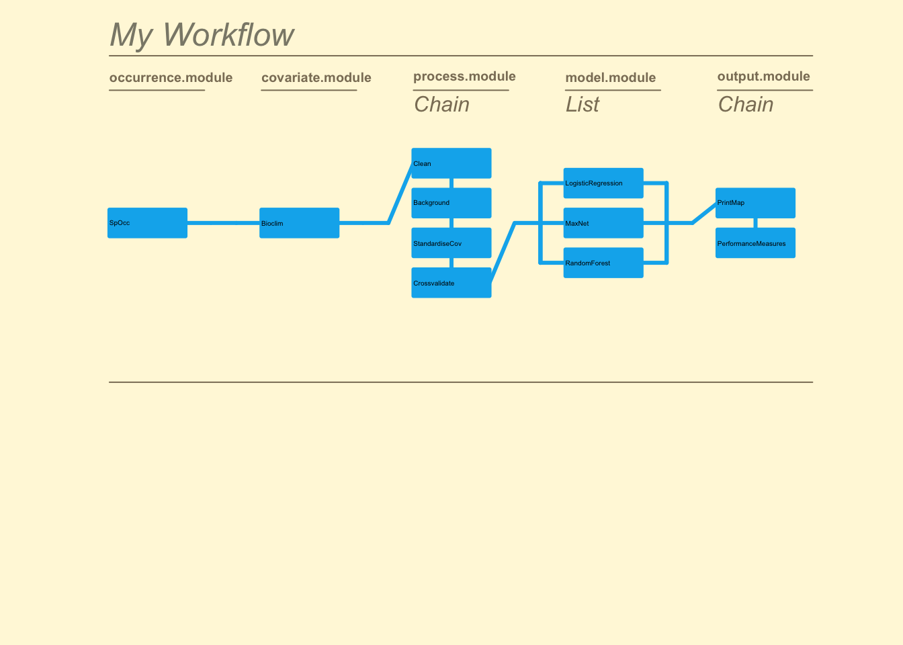

One of the hot topics in science recently has been the issue of reproducibility (Baker 2016). While we wont explore this issue here, the inability of researchers to reproduce, scrutinise, and build on others’ research prevents rigorous peer review, synthesis of research findings across studies, and reduces capacity for the science to be a self-correcting process (Boulton et al. 2012).
In order to overcome these problems, the data and code underpinning SDM research need to be made more accessible, reproducible and modifiable by the whole research community. This can be achieved if technologies enable and encourage sharing of research as fully reproducible objects (Peng 2011), in ways that suit the diversity of users involved in SDM (Ahmed et al. 2015).
The zoon R package has been developed specifically to improve the reproducibility of SDMs by allowing users to encode entire SDM analyses as repeatable and extensible workflows consisting of independently executable, community-contributed modules. The module-workflow structure enables scientists to easily create and share components of their analysis; and then access, modify, reuse and combine the components of others (see below and Figure 1).
In this guide we will cover the ways in which zoon aids reproducibility in SDM analysis.
zoon workflowWhile the workflow() in zoon is capable of fitting basic SDMs with a minimal amount of code, one of its strengths is the ability to perform more elaborate analyses using the Chain() and list() functions to run multiple modules in series and/or parallel. Here is a moderately complex example:
example <- workflow(occurrence = SpOcc(species = "Ursus arctos",
extent = c(-175, -65, 20, 75),
databases = "gbif",
type = "presence"),
covariate = Bioclim(extent = c(-175, -65, 20, 75),
resolution = 10,
layers = 1:19),
process = Chain(Clean,
Background(1000), ### This chunk is evaluated and not
StandardiseCov, ### shown/printed to screen
Crossvalidate(k = 5)), ### Next chunk is not evaluated
model = list(LogisticRegression, ### But chunk code shown
MaxNet,
RandomForest),
output = Chain(PrintMap,
PerformanceMeasures),
forceReproducible = TRUE)
Here we fit three modelling methods to data sourced from online repositories, perform multiple pre-processing steps in sequence, and generate multiple outputs for each model.
An issue with reproducing the results of an SDM analysis like the one above without having access to the code (e.g. based only on the Methods section of a published paper) is ensuring that all of the steps are undertaken in the same order with the same parameters. Even the choice of computer program (as well as different versions of both the program and add-on packages) can affect the chances of replicating results. The workflow() function has been designed specifically to overcome these difficulties.
First up is the forceReproducible argument within the workflow() function itself. When set to TRUE it forces the function to obtain all called modules from the online repository. This prevents any issues from arising due to users working with modified versions of modules stored locally on their own computer.
When our workflow is saved into our environment as a zoonWorkflow object, we can make calls to it directly to return the commands needed to re-run the analysis, find out information about the computer it was run on, what versions of R packages were used, and which version of each zoon module was used.
We can obtain the code used to run a workflow by accessing the call attribute of our workflow. This lets us see exactly what choices were made by another user when they fit their workflow() function.
example$call## [1] "workflow(occurrence = SpOcc(species = \"Ursus arctos\", extent = c(-175, -65, 20, 75), databases = \"gbif\", type = \"presence\"), covariate = Bioclim(extent = c(-175, -65, 20, 75), resolution = 10, layers = 1:19), process = Chain(Clean, Background(1000), StandardiseCov, Crossvalidate(k = 5)), model = list(LogisticRegression, MaxNet, RandomForest), output = Chain(PrintMap, PerformanceMeasures), forceReproducible = TRUE)"On occassion there may still be differences in the output of a workflow despite being called with the exact same code. This is often related to different users running the code on different operating systems, different versions of R, with different package versions (zoon or otherwise), and/or different versions of zoon modules. These can be checked by accessing the session.info and module.versions attributes of a zoonWorkflow object.
session.info stores the non-zoon information about the analysis including the version of R used, the user’s operating system, and the version numbers of the packages loaded for the analysis. module.info stores the version numbers of the modules used in the analysis.
example$session.info## R version 3.4.2 (2017-09-28)
## Platform: x86_64-apple-darwin15.6.0 (64-bit)
## Running under: macOS Sierra 10.12.6
##
## Matrix products: default
## BLAS: /Library/Frameworks/R.framework/Versions/3.4/Resources/lib/libRblas.0.dylib
## LAPACK: /Library/Frameworks/R.framework/Versions/3.4/Resources/lib/libRlapack.dylib
##
## locale:
## [1] en_AU.UTF-8/en_AU.UTF-8/en_AU.UTF-8/C/en_AU.UTF-8/en_AU.UTF-8
##
## attached base packages:
## [1] stats graphics grDevices utils datasets methods base
##
## other attached packages:
## [1] zoon_0.6.2 raster_2.5-8 sp_1.2-5
##
## loaded via a namespace (and not attached):
## [1] Rcpp_0.12.13 plyr_1.8.4 compiler_3.4.2
## [4] R.methodsS3_1.7.1 bitops_1.0-6 R.utils_2.5.0
## [7] tools_3.4.2 SDMTools_1.1-221 testthat_1.0.2
## [10] digest_0.6.12 dotCall64_0.9-04 tibble_1.3.4
## [13] gtable_0.2.0 rfigshare_0.3.7 evaluate_0.10.1
## [16] lattice_0.20-35 rlang_0.1.2.9000 rstudioapi_0.7
## [19] commonmark_1.4 yaml_2.1.14 rgdal_1.2-13
## [22] spam_2.1-1 dismo_1.1-4 httr_1.3.1
## [25] stringr_1.2.0 roxygen2_6.0.1 xml2_1.1.1
## [28] knitr_1.17 fields_9.0 maps_3.2.0
## [31] rprojroot_1.2 grid_3.4.2 R6_2.2.2
## [34] XML_3.98-1.9 foreign_0.8-69 rmarkdown_1.6
## [37] RJSONIO_1.3-0 rworldmap_1.3-6 ggplot2_2.2.1
## [40] magrittr_1.5 scales_0.5.0 backports_1.1.1
## [43] htmltools_0.3.6 maptools_0.9-2 randomForest_4.6-12
## [46] colorspace_1.3-2 httpuv_1.3.5 stringi_1.1.5
## [49] lazyeval_0.2.0 munsell_0.4.3 RCurl_1.95-4.8
## [52] crayon_1.3.4 R.oo_1.21.0example$module.versions## $occurrence
## [,1]
## module "SpOcc"
## version "1.0"
##
## $covariate
## [,1]
## module "Bioclim"
## version "1.1"
##
## $process
## [,1] [,2] [,3] [,4]
## module "Clean" "Background" "StandardiseCov" "Crossvalidate"
## version "1.1" "1.3" "0" "1.0"
##
## $model
## [,1] [,2] [,3]
## module "LogisticRegression" "MaxNet" "RandomForest"
## version "1.0" "1.0" "1.1"
##
## $output
## [,1] [,2]
## module "PrintMap" "PerformanceMeasures"
## version "1.2" "1.0"As workflow() functions are saved as objects of class zoonWorkflow they can be saved to file and shared between users. This object contains all of the code needed to re-run the analysis, all of the data used, and all of the results. We can save a zoonWorkflow object as a single .RData object with R’s save() command:
save(example, file = 'workflow.RData')And reload it with load():
load('workflow.RData')This allows the entire data analysis process (data, model, and output) to be shared between users.
The RerunWorkflow() function takes a zoonWorkflow object and reruns it. This lets us try to reproduce our own analysis or that of someone else provided we have access to the zoonWorkflow object. If you only want to rerun the workflow from a certain point onwards (such as keeping the same data from an online repository but with new background data) then you can use the from argument to specify a starting point.
RerunWorkflow(example)